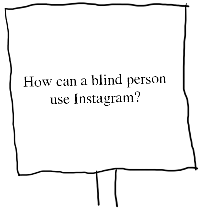
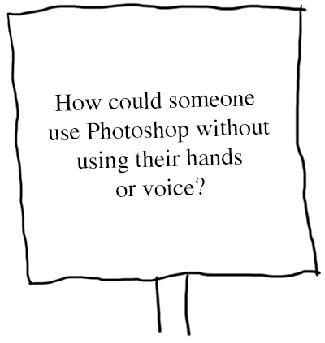
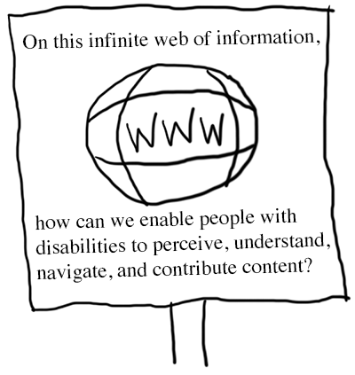

Accessibility Crash Course
for Web Developers
Dan Lewis
Clemson University
What is Web Accessibility?
"Web accessibility means that people with disabilities can use the Web."
What is Web Accessibility? (continued)
"More specifically, Web accessibility means that people with disabilities can perceive, understand, navigate, and interact with the Web, and that they can contribute to the Web."
Why Accessibility?
- Empathy
- Law
- Human Rights
- Business
- Standards
- Universal Design
- The Future You
- The Present You
Nerd Sniping

A person wearing a hat is sitting in a chair and begins speaking to a bystander.
Person in Hat: There's a certain type of brain that's easily disabled.
If you show it an interesting problem, it involuntariliy drops everything else to work on it.
This has led me to invent a new sport: nerd sniping.
See that physicist crossing the road?
Hey!
The Person wearing the hat holds up a sign that reads: On this infinite grid of ideal one-ohm resistors, what's the equivalent resistance between the two marked nodes?
Physicist: It's... hmm. Interesting. Maybe if you start with... No, wait. Hmm... You could...
(A truck zooms by.)
Bystander: I will have no part in this.
Person in Hat: C'mon, make a sign. It's fun! Physicists are two points, mathematicians three.
Nerd Sniping Instagram
Nerd Sniping Photoshop
Nerd Sniping the Web
Accessibility Techniques
- Managing Focus
- Proper Semantics
- Thoughtful Design
Focus
- Visual focus
- Keyboard navigation
Keyboard Navigation
Can you navigate the website using only the keyboard?
Is there anything that requires the mouse?
DOM Order
- Document Object Model
- tabindex
- element.focus()
tabindex
<div tabindex="-1"></div>
- negative: element is focusable programmatically only
- zero: element is focusable; in DOM order
- positive: element is focusable; relative order (BAD!)
element.focus()
- Focus managed with JavaScript
- Menus, dialogs, complex widgets
- Often paired with negative tabindex
<div id="some-div" tabindex="-1"></div>
var el = document.getElementById('some-div');
el.focus();
Focus Outline
Example Link 1Example Link 2
Example Link 3
<a href="//example.com">
Example Link 1
</a>
<a href="//example.com" style="outline:none">
Example Link 2
</a>
<a>
Example Link 3
</a>
Skip Links
- Allow keyboard users to jump straight to main content
- Often visually hidden until focused
- Browser quirks
<a href="#main">Skip navigation</a>
<nav>
...
...
...
</nav>
<main id="main" tabindex="-1">
Focus: Putting it all together
- Works with just the keyboard
- Has logical focus order
- Visibly shows current focus
- Does not abuse tabindex
- Uses element.focus() appropriately
- Provides skip link
Semantics
"What is this thing and what does it do?"
WAI-ARIA
- The Web Accessibility Initiative Accessible Rich Internet Applications specification
- Roles (menu, checkbox)
- State and Properties (aria-checked, aria-label, aria-hidden)
- Live regions, drag & drop
Don't use ARIA if a native control is sufficient!
Language
<html lang="en">
Page Title
<title>Descriptive and Unique</title>
Headings
- Use them!
- Not for font size
- Create hierarchy
<h1>Level One</h1>
<h2>Level Two</h2>
<h3>Level Three</h3>
Labels
- Form controls must have labels
- Labels must be properly associated
<label for="name">Name</label>
<input id="name">
Wrapped Labels
<label>Name: <input></label>
ARIA Labels
<button class="icon-search" aria-label="Search">
</button>
Avoid Generic Link Text
<a href="http://example.com">click here</a>
Click here for an example website!
vs.
Visit an example website.
Underline Links
Visit an example website.
vs.
Visit an example website.
Alternative Text
<img src="tiger.jpg" alt="A tiger with her cub in the snow">
Decorative Images
<img src="paw.png" alt="">
Images as Text
<img src="wordmark.png" alt="Clemson University">
Captions
Synchronized, Equivalent, Accessible
Tables
- Not used for layout
- Used for data
- Include table caption and headers
Example Table
| Year | Units Sold |
|---|---|
| 1990 | 100 |
| 2000 | 5,800 |
Example Table Code
<table>
<caption>Widgets Sold by Year</caption>
<tbody>
<tr>
<th scope="col">Year</th>
<th scope="col">Units Sold</th>
</tr>
<tr>
<td>1990</td>
<td>100</td>
</tr>
<tr>
<td>2000</td>
<td>5,800</td>
</tr>
</tbody>
</table>Buttons
Example Button 2
<button>Example Button 1</button>
<a href="#">Example Button 2</a>
HTML5 + ARIA Landmarks
<header role="banner">
<nav role="navigation">
<main role="main">
<aside role="complementary">
<footer role="contentinfo">
Design
- Sensory characteristics
- Use of color
- Strobing content
- Multiple devices
Sensory Characteristics
Don't rely solely on sensory characteristics to express meaning.
- Color
- Shape
- Location
- Sound
Vision Statistics
- More than 280 million people are visually impaired
- 1 in 26 people see your site differently
Color Contrast
| Conformance | Normal Text | Large Text |
|---|---|---|
| AA | 4.5:1 | 3:1 |
| AAA | 7:1 | 4.5:1 |
Large text is at least 18 point or 14 point bold.
Strobing Content
Flashes faster than 3 times per second can cause seizures for people with photosensitivity.
Responsive Design
- Grid system
- Media queries
- Flexible images
Read the seminal paper on A List Apart.
Zoom
<meta name="viewport"
content="width=device-width, initial-scale=1">
maximum-scale=1
user-scalable=no
Testing for Accessibility
- Automated Testing
- Manual Testing
Automated Testing: Pros
- Quick: can scan a lot of code at once
- Provides a good baseline
- May catch errors that were otherwise overlooked
- Can report some errors with certainty (i.e. missing alternative text)
Automated Testing: Cons
- False positives; false negatives
- Many errors require human analysis
- Not as thorough as manual testing
- Alternative text: accurate? decorative?
- Difficulty determining color contrast
- Difficulty with complex widgets & rich content
- Nuances between screen readers and browsers
WAVE Toolbar
- Identifies common errors and warnings
- Summarizes accessibility features
- Provides structural information, ability to toggle CSS, and contrast checks
Tenon.io
- Automatically scans websites for accessibility errors
- Provides an API to integrate accessibility testing into existing toolchain
- Web interface to manage projects and settings
Google Accessibility Developer Tools
- Adds accessibility audit to dev tools
- Adds accessibility properties to elements tab
- Can audit dynamically generated content
- Provides links to detailed error descriptions
High Contrast Mode
- Shows websites in high contrast mode
- Affects users with low vision
- Colorblind people may benefit
- Helpful for people sensitive to light
Color Contrast Checkers
- Ensures color contrast is sufficient for low vision users
Chrome Lens
- Simulates visual deficiencies
- Track path of a screen reader user
Manual Testing
- Manual testing can be tedious
- Requires strong understanding of accessibility best practices
- There's no substitute for a human
Screen Readers
- JAWS
- NVDA
- VoiceOver
- Window-Eyes
- ZoomText
Screen Reader / Browser Combos
- JAWS with IE
- NVDA with Firefox
- VoiceOver with Safari
- Window-Eyes with IE
- ZoomText with IE
Bonus
Widgets
- Modal dialogs, date pickers, combo boxes, etc.
- Keyboard interaction
- ARIA attributes
- Examples
Form Errors
Hidden Content
Hidden from screen readers:
<div aria-hidden="true">...</div>
Hidden visually:
.visually-hidden {
position: absolute;
left: -10000px;
top: auto;
width: 1px;
height: 1px;
overflow: hidden;
}
Single Page Apps
- Focus should be evident at all times, especially after dynamic updates
- When navigating, update title and set focus to main container or h1
- Use aria-live to express UI changes
aria-live
<div aria-live="polite"></div>